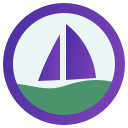

DriftlessHand off before the context rots.
And never drift from what you set out to do.
For Claude Code, Codex, Cursor, OpenCode, Kilo Code, Amp, Qwen Code, Gemini CLI, Copilot CLI, Devin and Kiro, and, without the automation, for any agent
that reads AGENTS.md (only Claude Code is tried live: help wanted).
27% to 31% off the whole bill, subagents included, replayed on the author's own month of work against carrying each piece of work in one session to the end. Every comparison, the weak ones too, is below.
- Watchthe size of the context, at every answer
- Hand offwhen carrying it costs more than a fresh start
- Write downwhere things stand, in three documents
- Reopenthe project in a fresh session
- Resumefrom the resume point, and go on
Then round again. You type nothing, and you never look at a context meter.
Long agent sessions get more expensive as they grow. Every answer re-reads the whole context, so a session that never ends pays more and more for each step. Many people also find they get worse; our own data neither confirm nor refute that. Compaction squeezes the history and loses details nobody chose to lose.
Driftless does what careful people do by hand: before the context grows stale, it writes down where things stand and starts a fresh session that picks up from there.
Driftless · ctx 142k/260k (55%) · cache 37m · saved $67.82All there is to see while you work: the context against the handoff limit, the minutes left on the prompt cache, the saving so far.
Measured, not promised
One developer's real history (97 pieces of work, October to November 2026, Opus 5.5 on a 1M-token window),
replayed at November's list prices against never resetting: each piece of work carried in one session until it is done,
with no handoff, no /clear and no compaction. On a 200k window native compaction would step in first, so your
"before" may cost less than this one.
The fixed cost is what a session weighs before you type: in Claude Code, VS Code panel, 77.7k tokens → about 60.3k estimated, 59.0k measured once, automatically, with none of your agents, skills or instructions hidden. Read each of the other figures against what it compares:
| Against | What | Saving |
|---|---|---|
| never resetting | everything built today: rule, size guards, diet, command output limit (replayed, with the handoff priced as 17 real handoffs cost and the re-reads after a cut output counted; the lighter start estimated, quality not measured) | 27.0% to 31.3% of the whole bill (29.5% in the middle) |
| never resetting | the rule alone, main thread (97 pieces of work) | 30.1% (95% interval 18.2% to 43.6%) |
| never resetting | the rule alone, whole bill with subagents | 19.3% |
| the same developer's careful manual handoffs | the rule, main thread | 3.5%: the value is not having to watch a meter |
| short work, under 100 requests | the rule | about 0% |
Ten long pieces of work out of 73 make 85% of the saving, so with little history your figure can land anywhere from near zero to a third.
These are one person's numbers. Yours are one question away: ask the agent "does Driftless pay off here?" and
audit replays your own history on your machine, spends no tokens, sends nothing, and says so when Driftless would not save you money. The saving depends
on the price list: as cache reads get cheaper, resetting saves less money. Quality against context rot is not measured here.
Three documents, three jobs
NORTHSTAR.md — the goal, in your words: why you want it, how you will know, what you do not want. Only you change it.DESIGN.md — the durable source of truth, by topic, kept as-is, with an index at the top. Sessions read only the sections they need.LOGBOOK.md — the last three tasks in detail, older ones one line each, and the Resume point.How it works
- Start. In a folder that is not a project, Driftless asks: new project, resume one, or just work here. A new project gets its folder, the three documents and a short interview for the North Star.
- Work. Every session starts with the goal, the resume point and the design index already in context.
- Time to hand off. When carrying the context has cost as much as a fresh start, or at a cap you set, the agent is asked to hand off: durable decisions go to the design doc, the logbook is compressed, the resume point is rewritten with a course check against the North Star.
- Fresh session. Driftless opens a fresh session in the project whose first prompt is "resume from the resume point". The old one stops.
- One driver. A baton keeps two live sessions from steering the same project. In Claude Code it goes to the session you write in, not to the one that opened first.
Install
What you get depends on what the tool lets Driftless hang on to.
- Level 1, hooks. The tool runs Driftless when a session starts and when a turn ends: the session starts with the project's context, the size of the context is watched, the handoff is asked for by itself, and the fresh session opens by itself wherever the tool can open one. Where the hooks do not say the size of the context (Devin, Kiro), the handoff is asked for at the end of each step of the resume point instead.
- Level 2, no hooks. The method without the automation: the agent runs two commands because
AGENTS.mdtells it to. Nothing measures the context, and you start the next session.
| Tool | Level | Context measured | Fresh session | One-time step | Tried live |
|---|---|---|---|---|---|
| Claude Code | 1 | real tokens | where you work: VS Code panel, desktop app or terminal; none after a one-shot claude -p, which is asked nothing | trust the projects folder | yes: on Windows, at every change |
| Codex | 1 | real tokens | new terminal window; none after a one-prompt codex exec, which is asked nothing | approve the hooks once (/hooks) | no |
| Cursor | 1 | estimated | new terminal window (Cursor CLI); none after a one-prompt agent -p | install the Cursor CLI and log in, reload Cursor | no |
| OpenCode | 1 | real tokens | same window in its terminal UI; under serve or web, in the session list; none after a one-shot run | none | once, before the economic rule |
| Kilo Code | 1 | real tokens | same window in its terminal UI; inside VS Code, a JetBrains IDE or under kilo serve, in the session list; none after a one-shot kilo run | restart Kilo once | no |
| Amp | 1 | real tokens | new thread, same client; none after a one-prompt amp -x | reload the plugins once (plugins: reload) | no |
| Qwen Code | 1 | real tokens | from a terminal: qwen -i; none after a one-prompt qwen -p | none: hooks are on by default, only a project's own ask for approval | no |
| Gemini CLI | 1 | real tokens | from a terminal: gemini -i; none after a one-prompt gemini -p | trust the folder: it runs hooks only in one it trusts | no |
| Copilot CLI | 1 | estimated | from a terminal: copilot -i; none after a one-prompt copilot -p | none: only a repository's hooks need admission | no |
| Devin | 1 | no: asked at the end of each step | from a terminal: devin --; none after a one-prompt devin -p | trust the folder when Devin asks | no |
| Kiro | 1 | no: asked at the end of each step | from a terminal: kiro-cli chat; from the IDE: no, you start it; none after a headless --no-interactive run | for the IDE, install it in each project | no |
Any other agent that reads AGENTS.md | 2 | no | no: you start it | install it in each project | no |
"No" means written from the tool's own documentation and run in the tests on input in the documented shape, never in the tool itself. The author works on Claude Code only, on Windows: macOS has never been tried, Linux only in a container without a model, and the CI workflow has not run yet.
Claude Code, as a plugin:
/plugin marketplace add Tigierre/driftless
/plugin install driftless@driftlessThe other tools of level 1: clone the repository (Node.js 18+), then once per tool (<clone> is the folder
you cloned it into; keep it, the hooks run from there):
node <clone>/scripts/driftless.mjs install codex
node <clone>/scripts/driftless.mjs install cursor
node <clone>/scripts/driftless.mjs install opencode
node <clone>/scripts/driftless.mjs install amp
node <clone>/scripts/driftless.mjs install qwen
node <clone>/scripts/driftless.mjs install gemini
node <clone>/scripts/driftless.mjs install copilot
node <clone>/scripts/driftless.mjs install devin
node <clone>/scripts/driftless.mjs install kiro
node <clone>/scripts/driftless.mjs install kiro <project folder> # the Kiro IDE reads hooks from the projectCodex skips without a word a hook you have not approved, so an install can look done and do nothing:
node <clone>/scripts/driftless.mjs doctor codex asks Codex itself and says, hook by hook, whether it runs.
Driftless only asks: it never writes the approval for you. The approval holds for codex exec too:
your scripts run the hooks you approved in a session, and skip the others just as silently.
OpenCode, Kilo Code and Amp load a plugin and have no command that says whether they call it. The plugin writes down
what it is told (loaded, a session started, a turn ended and with what size of context), and
node <clone>/scripts/driftless.mjs doctor opencode (or kilo, or amp) reads it back: what has
come since the install, and what to do about what has not. Cursor, Qwen Code, Gemini CLI, Copilot CLI, Devin and Kiro run
hooks that are commands, and have no command that says whether they run them: each hook notes that it ran, and
doctor cursor (or qwen, gemini, copilot, devin,
kiro) says which has run since the install. Those notes hold no folder, no session and nothing of the
conversation.
Level 2, once per project:
node <clone>/scripts/driftless.mjs install generic <project folder>It makes the folder a Driftless project and writes an AGENTS.md there that tells the agent to run
begin when a session starts (the goal, the resume point, the design index) and step when a step of
the resume point is done (it asks for the handoff). An AGENTS.md you already have is written to only if you ask:
Driftless shows the lines and you add them, or install generic <project folder> --append puts them at the end
of your file between two marks, changes nothing else in it, and uninstall generic takes them out again.
Help wanted
Only Claude Code is tried live. Every other row of the table is not tried: built from the tool's documentation and
covered by smoke tests with simulated hook input. Codex, Cursor, Kilo Code, Amp, Qwen Code, Gemini CLI, Copilot CLI, Devin and Kiro have never run
Driftless, OpenCode only once, before the economic rule, and no real agent has ever followed the AGENTS.md of
level 2. The author works on Claude Code only, so none of it will be tried here. If you use one of them, please try it and
open an issue with the tool and its version, your operating system, the output of node <clone>/scripts/driftless.mjs status
run in the project and of doctor <tool> (every tool of level 1 but Claude Code has one), and what happened at the first handoff: was it asked for by
itself, did the handoff agent run, did a fresh session open, and where. At level 2: did the agent run begin and
step because AGENTS.md says so, or only when you told it to. "It worked" is worth as much as a bug
report.
Trust once
Agents ask whether to trust a folder they have never opened, and a new project is a new folder. Trust is a security decision, so Driftless does not take it for you. Keep your projects under one folder and trust that folder once: every project created there opens without asking.
Stop it
Done for the day? Say so: the agent runs the handoff, the project is released, no new window opens, and Driftless is still on tomorrow. Asked for a handoff at a bad moment? Say "not now", and it asks again a step further on.
No service runs: Driftless lives in the agent's hooks, and the only thing it starts on its own is a short weekly replay of your
history, which stays on your machine and ends by itself. Tell the agent "stop Driftless",
or run off for one project, off --global for all of them, and on to
switch it back. A handoff already asked for is dropped.
When it hands off
By default, when it pays. Every request re-reads the context from the cache, a little money each time; a fresh start
costs once. Driftless keeps both figures with the prices of your model and hands off when they meet: no threshold to tune,
on any price list, and a short session about to end is left alone. It also stops before a price jump and always by 260,000 tokens
or 80% of the window, in Claude Code even in the middle of a long turn and inside subagents. Native automatic and idle compaction are blocked in Claude Code; a /compact you type still works.
Prefer a number? Set token_cap, cap_percent or both: the lower wins, and your cap always wins over the rule.
Back after a long pause? The prompt cache lives an hour, and the first message after it re-sends the whole context at the write price. With cold_restart on (off by default, Claude Code), that message goes on in a fresh session with the end of the conversation instead: about 0.6 points of the whole bill on the author's history, seen live once. A background task that reports or a scheduled task that fires is not a message of yours, and is left where it is.
A session that ends with no handoff (window closed, machine off) loses nothing: at every answer Driftless copies the end of the conversation to .driftless/snapshot.md, out of git and out of your documents, and points the next session to it only when it is needed. No tokens, about 15 ms.
A status line says where the session stands without opening /context: Driftless · ctx 142k/260k (55%) · cache 37m · saved $67.82, the context against the handoff limit, the minutes left on the prompt cache, the saving so far. No tokens; never written over a status line of yours; statusline off removes it.
What the words mean
We talk about agents as if they were colleagues, and it helps until it misleads. Here is the mechanism behind each figure of speech.
| We say | What actually happens |
|---|---|
| It remembers | Nothing survives between sessions except files. Within a session, the whole context is sent again at every request, and paid for. |
| The context rots | A figure of speech. The rising cost is measured; a loss of quality is not, at least not by us. |
| It hands off to a new session | No conversation takes place. The fresh session knows only what the three documents say, so they have to stand on their own. |
| It takes a break | Nothing rests. The prompt cache expires, and the next request pays to write the whole context again. |
| It thinks it over | Thinking is output: paid when written, and read again afterwards when the model preserves it. The effort setting governs it more reliably than instructions do. |
| It delegates to a colleague | A subagent starts from nothing we know, with its own fixed cost. It needs a brief that says everything. |